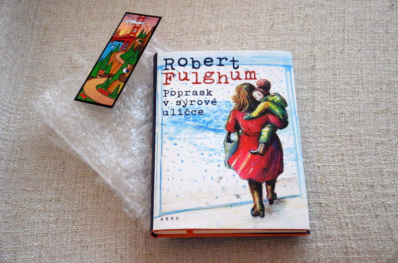

Přiznávám, že na nového Roberta Fulghuma jsem byla nesmírně zvědavá. A když má člověk velká očekávání, občas se zkrátka dostaví zklamání… Bohužel musím říct, že v tomto případě jsem malinko zklamaná skutečně byla.
Tím nechci hned na úvod Poprask v sýrové uličce zhanět - v knize stále najdete toho starého dobrého Fulghuma a jeho historky, při kterých vás zahřeje u srdce. Zároveň ale místy získáte pocit, že něco podobného už jste od něj četli, že té sentimentality je v útlém svazku knížky trochu moc a že už se možná vůbec tak nějak… vyčerpal. Kniha má stejný “vyprávěcí” koncept, na který jste ve Fulghumových knížkách zvyklí, i milý humor, s nímž se autor dívá na svět. Opět v ní najdete neobyčejně obyčejné příběhy všedního dne - a přesto zde něco tak úplně nefunguje. Už pilotní povídka, která dala název celé knize, je jakousi předzvěstí toho, že Poprask v sýrové uličce je jen slabým odvarem Fulghumových předcházejících knih.
Jediné, v čem tato kniha vyčnívá nad svými předchůdci, je grafická stránka, kterou nakladatelství Argo Fulghumovy knížky značně vylepšilo. Poprask v sýrové uličce krásně doplňují ilustrace Kateřiny Sechovcové. Sympatické je také to, že autor sestavil ze svých textů knížku speciálně pro české čtenáře. Tak či tak je toho, co tato dlouho očekávaná sbírka povídek a esejů nabízí, pro mě osobně nějak málo. Možná jsem ji jen zrovna nečetla ve správném rozpoložení. Možná by stálo za to se k ní po čase vrátit. Ale tady a teď to rozhodně nevidím na literární událost tohoto roku… bohužel.

Čerstvě vybalená knížka :)
Za poskytnutí knihy ke zrecenzování děkuji internetovému knihkupectví Megaknihy.cz